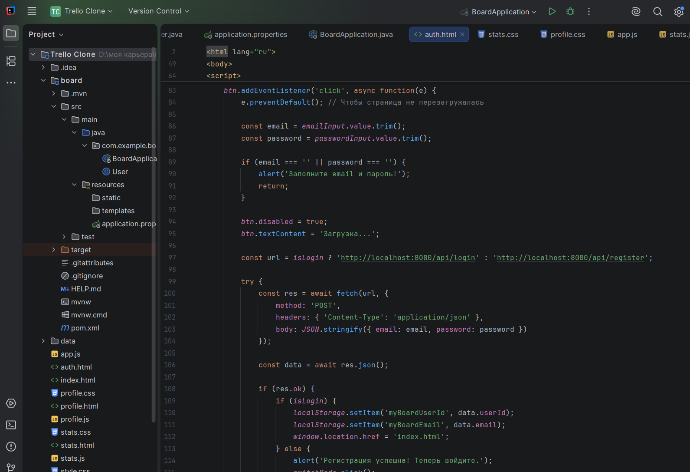
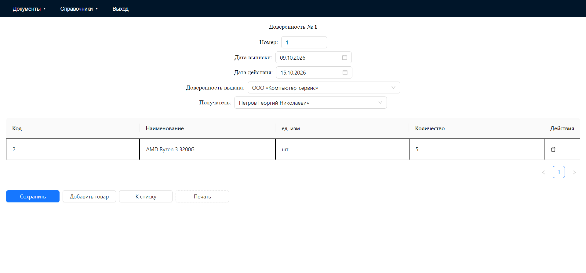
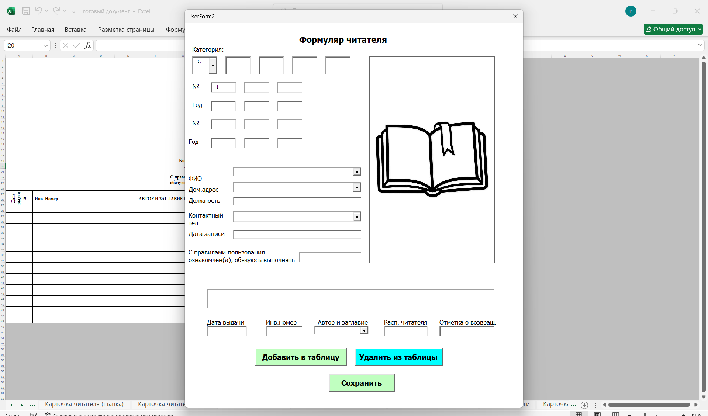
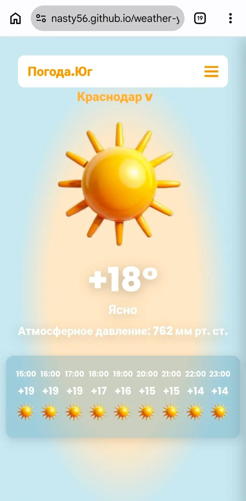

Студентка 2 курса «Прикладная информатика». Умею превращать рутинную работу с документами и данными в удобные цифровые инструменты. Владею стеком React + Java (Spring Boot) + SQL.

Ищу позицию стажера или Junior-специалиста (Fullstack-разработчик / Аналитик данных / Специалист по автоматизации), где смогу применять навыки работы с базами данных, backend-логикой и созданием интуитивных интерфейсов.
Имею практический опыт разработки fullstack-приложений и автоматизации бизнес-процессов. Легко осваиваю новые технологии (самостоятельно изучила Spring Boot и деплой).
+7 (918) 028-66-21
pogorelcevanasta5@gmail.com
GitHub: github.com/Nasty56


